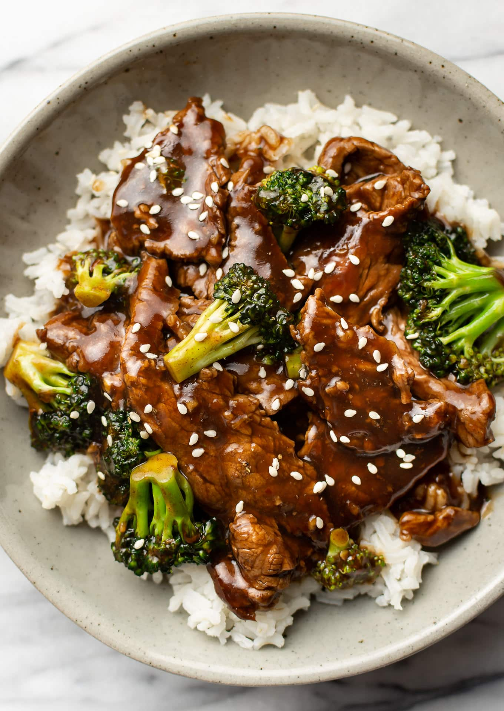

Beef & Rice
This easy beef and rice bowl will eat well for Less and is perfect for feeding family and friends.

This easy beef and broccoli rice bowl recipe has an addictive sauce that’s super quick to make from scratch! It rivals even the best takeout, yet it’s way more affordable.
The preparation time is less than 30 minutes and the cooking time is 10 to 30 minutes.
Ingredients
- 1 tbsp groundnut oil.
- 500g minced steak beef or 450g frying steak, cut into 1cm thick slices.
- 1 tsp cornflour.
- 1 onion, diced.
- 1 fat garlic clove, sliced.
- Thumb-sized piece fresh ginger, peeled and grated.
- 1 head broccoli, cut into small florets, stalk sliced into strips.
- 2 tbsp soy sauce.
- Half a vegetable stock cube.
- 2 tbsp oyster sauce.
- 1 red chilli, thinly sliced.
- 300g brown basmati rice, to serve.
- Freshly ground black pepper.
Once the ingredients have been prepared you are ready to move on to the cooking.
Method
- Bring a large saucepan of salted water to the boil, add the rice, stir well, then cook according to the packet instructions.
- Heat a wok over a high heat until hot. Add half the oil and, when it’s just smoking, add the beef. Sprinkle with cornflour and stir-fry until browned all over. Remove from the pan and set aside.
- Carefully wipe the wok until clean using kitchen paper. Bring to a high heat and add the remaining oil. Once hot, add the red onion and fry for 1 to 2 minutes, or until just soft. Add the garlic and ginger and fry for a minute
- Half-fill the kettle and bring to the boil. Add the broccoli, soy and oyster sauce to the wok and mix well. Add the vegetable stock cube with 250ml boiling water and bring to the boil, stirring well. Cover with a lid (use kitchen foil if you don't have a suitable pan lid) and cook for 2 minutes, or until the broccoli is just tender (you don’t want to lose the bright green colour).
- Stir the cooked beef through the sauce and heat for a minute. Scatter over the chilli and coriander and serve immediately with the drained rice.